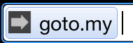

Hi!
Welcome to goto.my. To get started, go to your omnibox and type in the letter g, with a space afterward. You should see this pop up: 
That prompt shows you that goto.my is listening for keywords; a few have been preloaded for you, including a shortcut to goto.my's settings.
Go ahead and type "settings" in the omnibox (and press enter) to start customizing things.